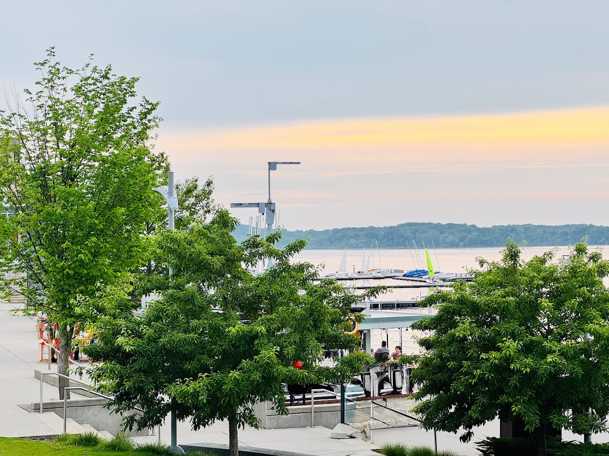
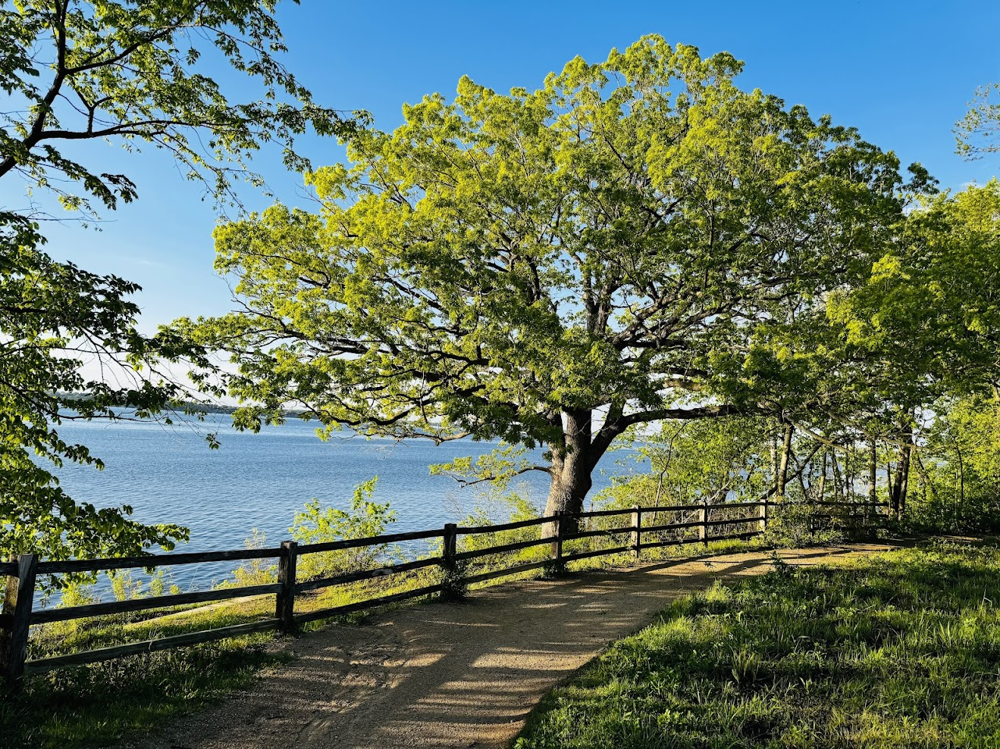

Living in Madison, Wisconsin has slowly changed the way I see everyday life. It's not just a city for me anymore — it feels like a balance between nature, water, quiet spaces, and focused work. Over time, it has also become the background of my PhD journey, shaping how I think, study, and reset.
There are a few special places I keep going back to again and again. Each one gives me a different kind of peace — and that balance has been important while doing PhD work.
🌅 Picnic Point — My Walking Escape Between Research Thoughts
One of my most peaceful spots is Picnic Point. It's a long, quiet stretch surrounded by water, trees, and open sky. I often go there when my PhD work feels heavy or when I get stuck thinking too much. Walking there helps me reset my mind.
Sometimes I think about research ideas while walking. Sometimes I don't think about anything at all. Both are equally important in a PhD life.
It reminds me that productivity is not only about sitting in front of a screen — it's also about stepping away.

🌊 Memorial Union — Where Work Breaks Turn into Mental Rest
Another place I enjoy is Memorial Union. It's more than a lakeside building — it's where I often take breaks from reading papers or writing. Sitting near the lake, watching people and boats, gives my mind space to breathe again.
PhD life can sometimes feel like continuous problem-solving. But places like this remind me that clarity often comes when I pause, not when I push harder.

Memorial Union — that misty morning on Lake Mendota
🌾 Raymer's Cove — Quiet Thinking Space for a Research Mind
One of the most peaceful hidden spots for me is Raymer's Cove. It's quiet, less crowded, and perfect for slow walks. I often go there when I need to think deeply — about research problems, writing structure, or just life in general.
There is something about still water and open space that helps organize my thoughts better than sitting at a desk sometimes.

📚 PhD Life in Madison — A Balance Between Focus and Nature
Doing a PhD is not only about research papers, coding, or experiments. It's also about managing your mind. For me, living in Madison makes that balance easier.
- Some days are focused and intense with research work
- Some days need long walks to clear my mind
- Some evenings end with lakeside views instead of screens
- And some weekends become quiet recovery time in nature
Places like Picnic Point, Memorial Union, and Raymer's Cove are not just locations — they are part of how I stay mentally steady during PhD life.
❤️ Why Madison Feels Special to Me
Madison is not just where I live. It is where I learn, struggle, grow, and reset. The combination of academic life and natural surroundings has quietly shaped my PhD journey in a positive way.
Living here has taught me something simple: progress in research is important, but so is peace of mind. And in places like Picnic Point, Memorial Union, and Raymer's Cove, I often find both.